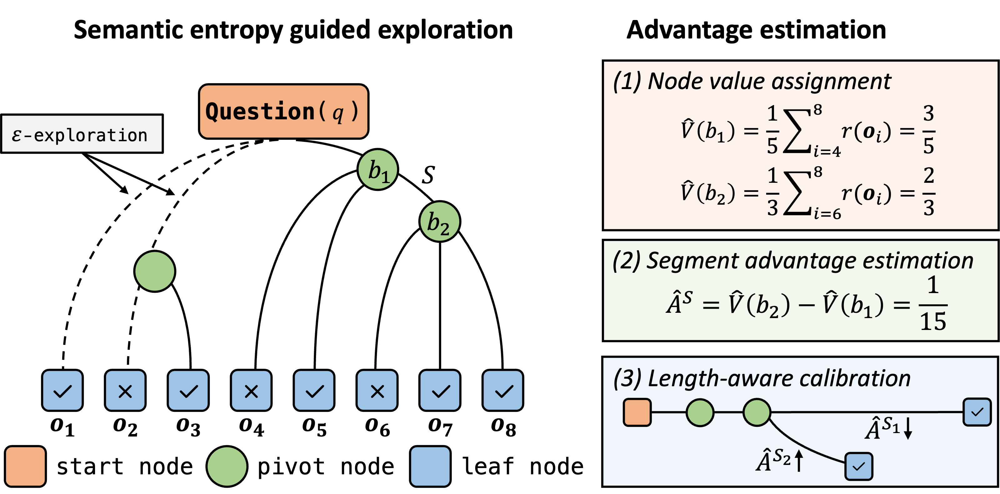

|
Ziqi Zhao 赵子奇 Hi, I am a final-year master student at IR Lab of Shandong University, supervised by Prof. Zhaochun Ren and Prof. Xin Xin. I also worked with Zihan Wang in University of Amsterdam. I received my bachelor's degree from the School of Software Engineering at Tongji University in 2023. My current research focuses on both fundamental and practical aspects of reinforcement learning, such as its applications in LLM post-training and recommendation systems. I am currently applying for PhD positions in 2026 Fall! I am open to exploring diverse and emerging directions. If you find my background interesting, please feel free to reach out. |

|
News
|
Selected Publications* Equal contribution |
|
 |
Reinforced Efficient Reasoning via Semantically Diverse Exploration
Ziqi Zhao, Zhaochun Ren, Jiahong Zou, Liu Yang, Zhiwei Xu, Xuri Ge, Zhumin Chen, Xinyu Ma, Daiting Shi, Shuaiqiang Wang, Dawei Yin, Xin Xin Preprint Paper / Code |

|
Offline Trajectory Optimization for Offline Reinforcement Learning
Ziqi Zhao, Zhaochun Ren, Liu Yang, Yunsen Liang, Fajie Yuan, Pengjie Ren, Zhumin Chen, Xin Xin KDD'2025 Paper / Code |

|
Improving Sequential Recommenders through Counterfactual Augmentation of System Exposure
SIGIR'2025 Paper / Code |

|
A cooperative multi-agent framework for zero-shot named entity recognition
Zihan Wang*, Ziqi Zhao*, Yougang Lyu, Zhumin Chen, Maarten de Rijke, Zhaochun Ren WWW'2025 Paper / Code |
Experience
|
Selected Awards
|
Academic Services
|
|
Website Template: Here |